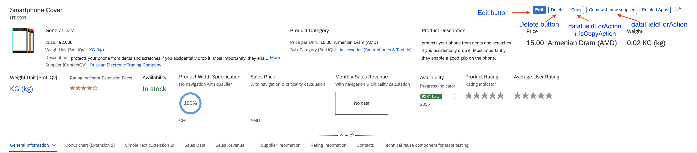

Enabling Actions in the Object Page Header
Enabling Actions in the Object Page Header
You can enable generic actions in your object header.
Edit, Delete and Copy are
the generic actions.
All com.sap.vocabularies.UI.v1.DataFieldForAction within the unqualified
UI.Identification are interpreted as actions. The system renders a
button in the header displaying the text of the data field label.

Object Page: Enable Actions in Header
Annotations for the Copy with new supplier Button:
XML
Annotation
Sample Code
Hidden
<Annotation Term="UI.Identification">
<Collection>
<Record Type="UI.DataFieldForAction">
<PropertyValue Property="Label" String="Copy with new supplier" />
<PropertyValue Property="Action"
String="STTA_PROD_MAN.STTA_PROD_MAN_Entities/STTA_C_MP_ProductCopy_new_supplier" />
<Annotation Term="UI.Importance" EnumMember="UI.ImportanceType/High" />
</Record>
...
</Collection>
</Annotation>
ABAP CDS
Annotation
Sample Code
Hidden
@UI.identification: [
{
importance: #HIGH,
label: 'Copy with new supplier',
dataAction: 'PUSHDOWN:STTA_C_MP_ProductCopy_new_supplier',
type: #FOR_ACTION,
position: 1
}
]
product;CAP CDS
Annotation
Sample Code
Hidden
UI.Identification : [
{
$Type : 'UI.DataFieldForAction',
Label : 'Copy with new supplier',
Action : 'STTA_PROD_MAN.STTA_PROD_MAN_Entities/STTA_C_MP_ProductCopy_new_supplier',
![@UI.Importance] : #High
}
]
In SAP Fiori elements for OData
V2, the
object page context is always passed when a header action is invoked.
In SAP Fiori elements for OData
V4, the
object page context is only passed for bound header actions. For unbound actions, no
context is passed.
Edit Action on Subobject Page
The edit action is also available on the subobject page. Its behavior depends on
the annotations on both levels:
-
The edit button is displayed on the subobject page only if it is also
visible on the object page and if the subobject page entity is not
annotated to hide it.
-
The edit button is enabled on the subobject page only if it is also
enabled on the object page and if the subobject page entity is not
annotated to disable it.
Selecting the edit button on the subobject page enables the edit action for
the entire object page, not just the subobject page where it was
selected.
Copy Action
The Copy button is not available by default. However,
applications can define a standard copy action by annotating a
dataFieldForAction with isCopyAction.
This Copy button is placed after the
Delete button.
XML
Annotation
Sample Code
Hidden
<Annotation Term="UI.Identification">
<Collection>
<Record Type="UI.DataFieldForAction">
<PropertyValue Property="Label" String="Copy" />
<PropertyValue Property="Action" String="STTA_PROD_MAN.STTA_PROD_MAN_Entities/STTA_C_MP_ProductCopy" />
<Annotation Term="UI.IsCopyAction" Bool="true" />
</Record>
CAP
CDS
Annotation
Sample Code
Hidden
UI.Identification : [
{
$Type : 'UI.DataFieldForAction',
Label : 'Copy',
Action : 'STTA_PROD_MAN.STTA_PROD_MAN_Entities/STTA_C_MP_ProductCopy',
![@UI.IsCopyAction] : true,
},
],Applications can define a label for this button. If a label is not provided, then
by default this button is labeled as Copy.
The copy action is only available on the object page, not on the
subobject pages.
Additional Features in SAP Fiori Elements for OData V2
Edit and Delete Buttons
The Edit and Delete buttons are displayed as shown above, if the following conditions
are met:
If you want to specify conditions for deletion or updates (using the deletable-path or updatable
path annotation), you need to ensure that you have not made the sap:deletable or
sap:updatable setting in your annotations.
For more information about the Delete button, see the
Enable or Disable Delete Button (Using
deletable-path
Annotations)
section in Adding Actions to Tables.
Show or Hide the Edit Button (Using updatable-path Annotation)
You can choose to display or hide the Edit button on the object page based on certain conditions in your
back-end system. For example, you may want to disable editing for a sales order that has already been paid.
In your annotation, set the updatable-path for the Edit button to point to a particular
property of an object (entity) in the back-end system that is either true or false. If the value
of this property is true, the Edit button is displayed; if it is false,
it is hidden.
If you want to specify conditions for the updatable-path annotation, you need to ensure that you have not
made the sap:updatable setting in your annotations.
Code Samples for updatable-path
The code sample below shows you how to set up your annotation to display or hide the Edit button, based on
the value of the Updatable_mc property in the back-end system.
XML
Annotation
Sample Code
Hidden
<Annotations Target="STTA_PROD_MAN.STTA_PROD_MAN_Entities/STTA_C_MP_Product">
<Annotation Term="Org.OData.Capabilities.V1.UpdateRestrictions">
<Record>
<PropertyValue Property="Updatable" Path="Updatable_mc"/>
</Record>
</Annotation>
</Annotations> Additional
Features in SAP Fiori Elements for OData V4
Edit and Delete Buttons
The Edit button allows users to edit the instance of the
object page.
The Delete button allows users to delete the instance of
the object page.
-
When
using
updateRestrictions,
a
new property is completely ignored. Draft
applications always have an
EditAction,
as shown in the following sample
code:
Hidden
<Annotation Term="com.sap.vocabularies.Common.v1.DraftRoot">
<Record>
<PropertyValue Property="EditAction" String="com.sap.gateway.srvd.sadl_gw_appmusicdr_definition.v0001.EditAction"/>
</Record>
</Annotation>
-
The visibility of the Edit button can be controlled by the updateHidden annotation
under the entity
set
(it can be path-based if the apps need to hide the Edit button, for example for specific
instances only).
XML
Annotation
Sample Code
Hidden
<Annotations Target="com.c_salesordermanage_sd.EntityContainer/HeaderPartner">
<Annotation Term="UI.UpdateHidden" Bool="true"/>
</Annotations>
OR
<Annotations Target="com.c_salesordermanage_sd.EntityContainer/SalesOrderManage">
<Annotation Term="UI.UpdateHidden" Path="isUpdateHidden"/>
</Annotations>
ABAP CDS
Annotation
Sample Code
Hidden
@UI.updateHidden:true
OR
@UI.updateHidden: #('isUpdateHidden')
CAP CDS
Annotation
Sample Code
Hidden
annotate com.c_salesordermanage_sd.SalesOrderManage with @( UI.UpdateHidden: true);
OR
annotate com.c_salesordermanage_sd.SalesOrderManage with @( UI.UpdateHidden: isUpdateHidden);
For more information about the visibility of the Delete button, see the
Showing or Hiding the Delete
Button
section in Adding Actions to Tables.
Edit Enablement
If the application defines an EditAction, as shown in the sample annotation above, the UpdateRestrictions are
completely ignored. Instead, OperationAvailable determines the enablement of the button. For more information
about OperationAvailable, see the
Enabling Custom Actions Defined Using
Annotations section in Actions.
-
If OperationAvailable = true (static) OR if
OperationAvailable is not defined, the
Edit button is visible (provided that
updateHidden doesn't evaluate to false) and
enabled.
-
If OperationAvailable = false (static), the
Edit button is not visible.
-
If OperationAvailable = <path>, the enablement of
the Edit button depends on whether the path returns
true or false. If the path returns null, the button is visible but
disabled.
Custom Global Actions
Applications can define their own global actions. The actions defined under the
unqualified UI.Identification, that are not set to
determining=true, are considered global actions and
rendered next to the standard actions in the header. The object page context is
passed to the action if the action is configured as a bound action or as a
DataFieldForIBN. For an unbound action, no context is
passed. For information about custom annotation actions, see Setting the Criticality for Actions and Actions.
The following sample shows examples of global actions:
XML
Annotation
Sample Code
Hidden
<Annotation Term="UI.Identification">
<Collection>
...
<Record Type="UI.DataFieldForAction">
<PropertyValue Property="Label" String="Break Up" />
<PropertyValue Property="Action" String="com.sap.gateway.srvd.sadl_gw_appmusicdr_definition.v0001.BREAK_UP" />
</Record>
<Record Type="UI.DataFieldForIntentBasedNavigation">
<PropertyValue Property="Label" String="SampleIBN"/>
<PropertyValue Property="SemanticObject" String="MySemanticObject"/>
<PropertyValue Property="Action" String="manage"/>
<PropertyValue Property="RequiresContext" Bool="false"/> // For header IBN buttons, this should only be false or not specified!
</Record>
...
</Collection>
</Annotation>ABAP CDS
Annotation
Sample Code
Hidden
@UI.identification: [
{
label: 'Break Up',
dataAction: 'com.sap.gateway.srvd.sadl_gw_appmusicdr_definition.v0001.BREAK_UP',
type: #FOR_ACTION,
position: 1
},
{
label: 'SampleIBN',
semanticObjectAction: 'manage',
type: #FOR_INTENT_BASED_NAVIGATION,
position: 2
}
]
TEST;
@Consumption.semanticObject: 'MySemanticObject'
%ENTITY;
CAP
CDS Annotation
Sample Code
Hidden
UI : {
Identification: [
{
$Type : 'UI.DataFieldForAction',
Label : 'Break Up',
Action : ' com.sap.gateway.srvd.sadl_gw_appmusicdr_definition.v0001.BREAK_UP'
},
{
$Type : ' UI.DataFieldForIntentBasedNavigation',
Label : ' SampleIBN ',
SemanticObject : 'MySemanticObject',
Action : 'manage',
RequiresContext : false
}
]
}
In the sample above, "UI" is used as an alias for
com.sap.vocabularies.UI.v1.
You control the visibility of the custom global actions by using the
UI.Hidden annotation.
If
static true or path-based evaluate to
true, the action button is
hidden.
You also control the enablement of the DataFieldForAction buttons via the OperationAvailable mechanism in the
same way as described in
the
Enabling Custom Actions Defined Using
Annotations
section in Actions.
The enablement of intent-based navigation (IBN) buttons can be controlled via the "NavigationAvailable" property, as described
in the Navigation Using a Button section in
Navigation from an App (Outbound Navigation).
The UI.DataFieldForAction can be bound or unbound actions. For more information, see the
Bound and Unbound
Actions
section in
Actions.
Parent topic:
Previous:
Next: